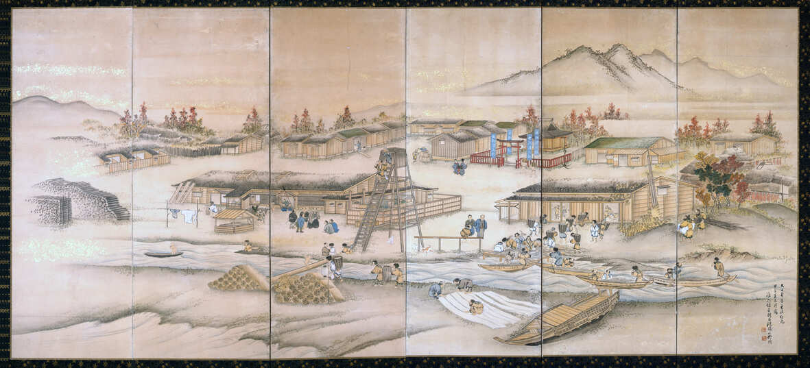

江戸時代、根室海峡沿岸に進出した和人は、ここに鮭漁の漁場を拓きます。
しかし、当初の搾取的経営は労働力となったアイヌの反感を買い、幕府をも巻き込む騒動に発展したこともありました。
根室の金刀比羅神社、標津の標津神社は、それぞれ海峡沿岸一帯の鮭漁を管理した根室上会所、根室下会所の社を前身とし、
北海道最東の海を全国へとつないだ船の「道」の歴史をいまに伝えています。
18世紀以降千島列島周辺では、鮭を求め北上する和人と、ラッコの毛皮を求め南下するロシア人の衝突が繰り返されます。
野付には日本東門の国境警備と開拓を担った「会津藩士の墓」があります。
標津代官南摩(なんま)綱紀(つなのり)は、文化の異なるアイヌと和人が共に開拓に臨む水産業のまちづくりを構想し、
その思いを「標津番屋屏風」に込めました。
当時鮭は高級魚で、中でも当地の鮭はその品質の良さから、江戸時代のブランドの一つとなっていました。
明治11年、北海道開拓使が西別川河口に「別海缶詰所」を開設。工場はやがて民営化され、国後島を含む海峡沿岸に続々と増設されていきます。

「標津番屋屏風」。標津神社は場所は現在も変わっていない